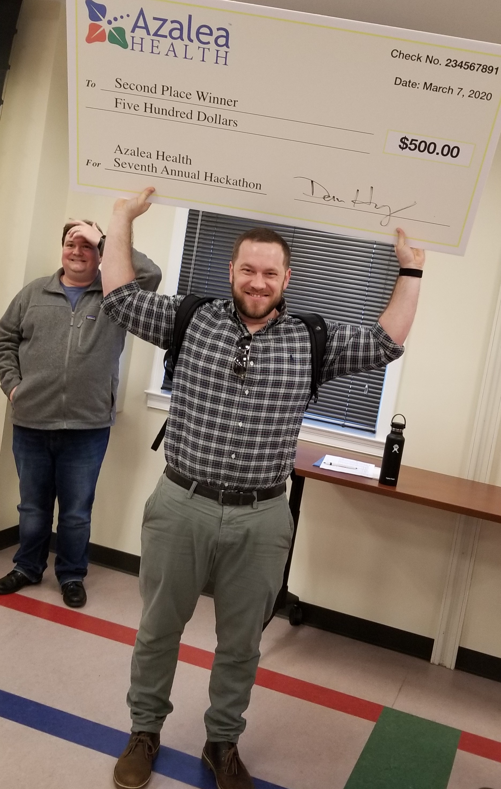

James Faber

I'm looking for a solid company with a tight-knit team of engineers working together to create software that blows our competition away. I'm self-motivated but I believe I really excel when working together closely with a team using Agile development methods. Feel free to check out my GitHub, or use my contact information below.
Work History
While completing my Bachelor's of Science degree in Computer Information Systems, I have gotten plenty of hands-on experience. During my Web Development course, I created fully functional websites using HTML, CSS, JavaScript, jQuery, AJAX, C# and XML. While taking Software Engineering, we were placed into groups of 4 to practice using Agile/SCRUM development methods. Our team used partenered programming as well as version control (Git) to create an application to be used at a doctors office. It allowed the employees to add, delete, or update patients, doctors, and appointments. It also allowed the doctor to prescribe medications to his patients. The patients were charged for their appointment and the charge was added to their total bill. The app also saved state and could be closed and reopened while keeping the data intact. In my Senior Seminar class, we worked as an agile development team using a Kanban type approach. This time I was able to serve as the scrum master for the majority of the semester. We created an application designed for first responders to use when they are responding to a dangerous or unknown situation. We used image recognition software along with an easy to use GUI we created to fly a drone and obtain pictures and information. The image recognition could recognise weapons (guns and knives), people, cars, trucks, among other things, to provide feedback to give them as much information as possible. I placed 2nd along with my team in the Azalea Health Hackathon in March 2020. We were given an assigment that morning at 8:30. By 3:30, we had to have our application completed and functioning properly. We wrote a social media app that tracked users' health. You could register as a new user and log in using that information. It allowed you to add friends, add doctors, set up appointments through the "Contact your doctor" function. It also compared your data you input against the data input by your friends. The application pooled all the data together and created a completely anonymous way to track your progress against others.